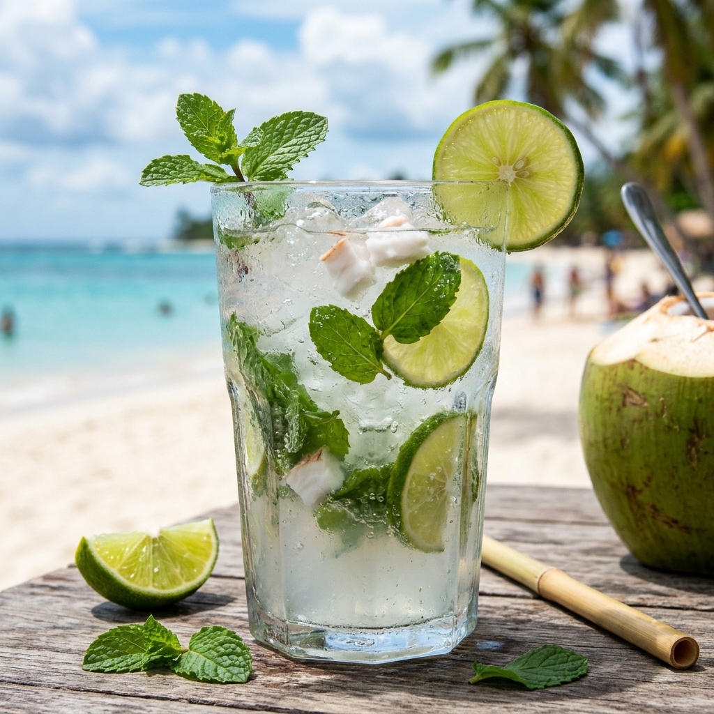

Daily Morning Plucking
Green tender coconuts and tree-ripened orchard fruits harvested at dawn and rushed to our stall within hours.
Tender Coconut & Fresh Juice Stall was founded on an unyielding principle: the sweetest hydration comes from fresh harvest, respect for nature, and immediate live preparation in front of you.
For too long, street corners and supermarket shelves were filled with artificial syrups, water-diluted juices, and processed concentrates. We set out to build an authentic tender coconut and fresh fruit juice stall where hygiene meets tropical craftsmanship—100% pure, unadulterated, and naturally chilled.

Every coconut decapped and glass poured adheres to our five craftsmanship pillars.
Green tender coconuts and tree-ripened orchard fruits harvested at dawn and rushed to our stall within hours.
Zero added white sugar, zero water dilution, and zero artificial preservatives or food coloring in any drink.
Coconuts are decapped live on clean cutting boards and fruit juices cold-pressed without heating or oxidation.
Sanitized stainless steel knives and presses, purified RO filtered ice, and compostable paper straws.
Bringing our authentic rustic wooden stall and live fruit stations to weddings, sports tournaments, and parties.



We view tender coconut not merely as a drink, but as a botanical masterpiece of natural hydration with delicate sweetness that needs no embellishment.
Our green tender coconuts carry sweet, mineral-dense water and spoonable tender malai. Our sugarcane juice is crushed live with fresh ginger and key lime, while our Valencia orange and ruby pomegranate juices offer pure, unfiltered vitality.
“Stopping by this tender coconut and fresh juice stall after my morning run has become my daily ritual. The coconuts are sliced open right in front of you, ice-cold and bursting with sweet water!”
“We hired their live Tender Coconut & Fresh Juice counter for our wedding reception. Guests were blown away by the live coconut decapping and freshly squeezed sugarcane and pomegranate juices!”
“The Tender Coconut Malai Shake is out of this world. Super thick, perfectly sweet without any refined sugar, and generous chunks of fresh soft coconut flesh. Absolutely addictive!”
Take a deep dive into our 6-step orchard-to-stall journey, coastal grove partners, and live preparation hygiene on our dedicated Sourcing page.